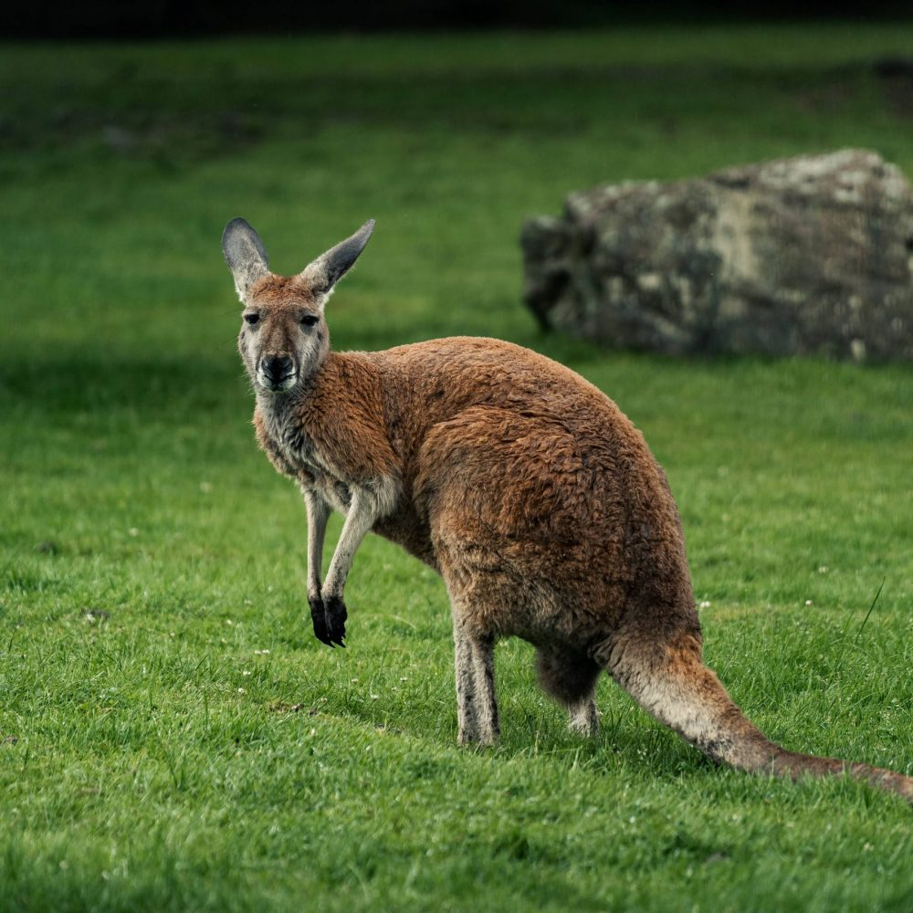
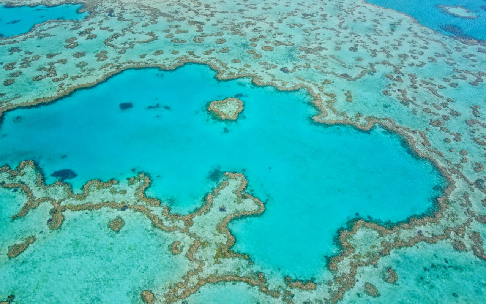

La nature
L'Australie est un véritable sanctuaire pour une faune unique et fascinante, abritant de nombreuses espèces que l'on ne trouve nulle part ailleurs dans le monde. Les vastes forêts tropicales, les déserts arides et les rives bordées de coraux créent un environnement riche et diversifié pour la vie sauvage. Parmi les animaux les plus emblématiques de l'île-continent, on retrouve le kangourou, le koala, et le wombat, qui symbolisent la nature australienne. Les kangourous, avec leurs bonds gracieux, parcourent les prairies ouvertes, tandis que les koalas passent leur vie paisiblement perchés dans les eucalyptus. Dans les océans australiens, on découvre une biodiversité incroyable, avec des requins, des tortues marines et des dauphins qui nagent à proximité des magnifiques barrières de corail. L'Australie est aussi le foyer de créatures moins connues mais tout aussi étonnantes, comme le quokka, un petit marsupial au sourire légendaire, ou l'emblématique platypus, un mammifère à bec de canard. Ce pays-continent est un véritable trésor naturel, où la faune évolue en harmonie avec des paysages à couper le souffle.


L'environnement
La Grande Barrière de Corail, située au large de la côte nord-est de l'Australie, est l'un des écosystèmes les plus extraordinaires et précieux de la planète. S'étendant sur plus de 2 300 kilomètres, elle est la plus grande structure vivante sur Terre, visible même depuis l'espace. Ce réseau complexe de récifs coralliens, d'îles et de lagunes abrite une biodiversité impressionnante, avec plus de 1 500 espèces de poissons, 411 espèces de coraux et une multitude d'autres organismes marins.
La barrière joue un rôle essentiel dans l'équilibre écologique des océans, en fournissant un habitat crucial pour des milliers d'espèces marines, dont des poissons tropicaux, des tortues, des dauphins et des requins. C’est également une source vitale de subsistance pour les communautés locales et une destination prisée par les plongeurs du monde entier, qui viennent admirer sa beauté exceptionnelle. Cependant, la Grande Barrière de Corail est aujourd'hui menacée par le changement climatique, la pollution, et l'acidification des océans. Le réchauffement des eaux provoque des épisodes de blanchissement des coraux, ce qui compromet leur survie. La préservation de cet environnement fragile est devenue un enjeu mondial, et des efforts sont déployés pour protéger et restaurer ce trésor naturel unique.
